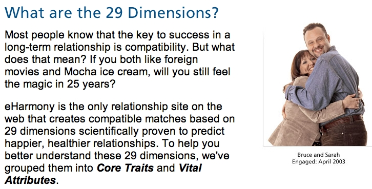

Week 4: Universal tools, III
Lecture 4.1: Representation spaces

Lecture 4.1: measurements and representation spaces

[A REMINDER FROM LAST WEEK]
How and in what sense can the brain get to KNOW the world?
The control of behavior requires that the brain
perform MEASUREMENTS on the outside world.
Think of this is as intelligence-gathering for the sake of the
command-and-control processes that reside in the
War Room [Sorry for the militaristic simile!
Please see
Lecture 3.1 for context].
perceptual measurements and representations
Perception involves the brain performing many measurements
on the outside world.
The measurements are STRUCTURED IN SPACE AND TIME, and they carry
information about the space-time structure of the world.
The use of
interaural time difference (ITD) in sound
localization was one example; another one is shown here on
the right; yet another one will come up later in this
lecture.
The resulting REPRESENTATION SPACES are also STRUCTURED. For this too
there will be examples.
How many measurements?
A lot!
the dimensionality of representation space = # of
measurements PER POINT

The measurements populate a REPRESENTATION SPACE.
It's a topological SPACE (not merely
a set) ONLY IF intermediate points in it
make sense too
(think morphing).
In this example, the "fruit space" (shown for illustration
purposes; no connection to the brain implied) has 2 dimensions,
which means 2 numbers per point.
Each point represents a
single kind of item (apples, bananas, etc.).
[WARNING]
Not every collection of data points implies the existence of a
topological
data SPACE.
This is why
INTERPOLATION between data points is not always
warranted.
Don't even think
about EXTRAPOLATION (unless you REALLY know what you're
doing).
how many dimensions are needed to represent...
Consider a skier performing a yard sale...
To represent this process, one must represent a function that maps
time
[the domain of the function].
to
the state of the skier
[the range of the function].
How many dimensions should this function's range possess?
[the obligatory climate connection]
We used to have 100-day skiing seasons here, at Greek Peak...
a high-dimensional representation space for personal preferences

[For a debunking of hyped-up pseudoscientific approaches to
matchmaking, see this article.]
[Also... If you both think "foreign movies" is a coherent category, you
deserve each other.]
the state space of a 3-neuron brain
The diagram shows the trajectory — state plotted against
time — of a three-neuron dynamical system
through the space of its possible states.
NOMINAL and EFFECTIVE dimensionality

How many dimensions are there in the data that the eye sends to the
brain?
About 1,000,000.
Luckily, throughout cognition, EFFECTIVE dimensionality is much,
much lower than NOMINAL dimensionality.

a visual task that illustrates the importance of SPATIALLY STRUCTURED measurements: acuity
Dimensionality is about the number of measurements.
The spatial structure of the measurements is very important
(as is their temporal structure).
On the right: two types of stimuli, illustrating
two-dot and vernier acuity
tasks —
the measurement device in this case

On the right: a magnified image of the retinal mosaic —
This is the fovea, hence no rods — only cones.

HYPERacuity

The smallest discernible vernier, as it projects onto the retinal mosaic
—
Note that the vernier displacement is much smaller than photoreceptor
size.
This is an example of hyperacuity-level performance.
Right: a cross-section of the receptive fields
of three adjacent receptors.
"tabletop" receptive field (RF) coding isn't very good
This measurement device is too insensitive: two close-by dots will likely
fall under the same RF and their locations will be perceived as
the same.
"high-resolution" coding isn't very good either, in another way
This measurement device too is suboptimal: dot locations get
"digitized", but some information still gets lost.
Can you tell why? (Think about how two dots appearing together get
represented.)
The spatial location of the dot is represented by the spatial
location (in the sensor array) of the sensor activated by it. In
other words, space is still represented by space, rather than
being transduced into some other, more useful/informative,
function of the signal.
overlapping "tabletop" coding is better
To have many overlapping RFs is a better idea.
If you could tell what was missing from the finer-resolution
"digitized" representation, you should be able to see why this one
is better.
overlapping, graded RF coding is the thing!

Can you tell why many overlapping and graded RFs would do an even
better job?
here's why broad, overlapping, graded receptive fields are so effective

Even small lateral displacements of the dot will not go unnoticed:
they get TRANSDUCED into measurable changes in the outputs of the
RFs.
here's why broad, overlapping, graded receptive fields are so effective
Can you tell why the performance for the vernier (two-line) stimulus is so much
better than for the two-dot stimulus?
Summary: hyperacuity-level performance is possible because
- the RFs are graded, and
- the RFs are broad and overlapping in space.
[EXTRA: a computational model of hyperacuity perception and learning]
Fast Perceptual Learning in Visual Hyperacuity,
Tomaso Poggio; Manfred Fahle; Shimon Edelman
Science, New Series, Vol. 256, No. 5059. (May 15, 1992), pp. 1018-1021.
from the structure of the measurement device to the structure of representation spaces
The plan for the rest of today:
- Experimental evidence for the representation space being a
SPACE;
- A powerful computational tool for studying representation spaces.
On the right: A schematic diagram of a
(high-dimensional) face space, illustrating the
following concepts:
-
the average face;
-
typical faces;
-
atypical faces;
-
novel faces.
face space and view spaces
In the plane:
the face [shape] space.
Perpendicular to it:
the view [orientation] spaces of some of the faces.
caricature as deviation from the mean in the face space
caricature as deviation from the mean
perceptual adaptation: a demo that reveals a general principle of representation in the brain
On the right: a quick demo of visual color adaptation. Stare at the
parrot for at least 30 seconds, then look at the center of the
cage. What do you see?
Adaptation, to which all perceptual modalities are susceptible,
reveals an important characteristic of neural coding:
the brain uses DISTRIBUTED REPRESENTATIONS, so that when some of the
units that participate in representing a particular stimulus get
fatigued and respond less vigorously, the ones that have not been
active "take over" and make the entire representation more like
their own preferred features of the stimulus.
Re distributed representations: recall the Haxby et al. (2001) paper from
Lecture 1.2.
using morphing to study face space in the brain (Jiang, Blanz, and O'Toole, 2006)
(a) The face space used in Experiment 1 of Jiang, Blanz, and O'Toole (2006).
Morphing along the line from the average
to an original face corresponds to anticaricatures, where the
identity strength is lower relative to the original. Increasing identity strength
beyond the original creates caricatures. The antiface of an
original is located on the other side of the average.
(b)
The four original scans that were used in the experiment and their
antifaces.
(c) The identity strengths from the experiment, scaled in units of
the distance of the original (1.0) from the average (0.0).
experiment 1 (Jiang at al., 2006)
(a) An example trial: across-viewpoint, neutral condition with
5 sec antiface adaptation.
(b) Left: an antiface adapting stimulus as presented in the
within-viewpoint condition; Middle: the corresponding antiface adapting
stimulus in the view-changed condition; Right: the corresponding
warped antiface.
(c) The proportion of trials in the within-viewpoint,
across-viewpoint, and warped conditions on which the test face was
identified as the match to the adapting antiface stimulus, as a function
of the identity strength of the test face.
Findings:
-
[within-viewpoint, diamonds symbol] The average face (identity strength = 0) was identified as the match to the
antiface adapting stimulus on .55 of the trials, significantly
more often than the .25 expected by chance.
-
[across-viewpoint] The average face was identified as the match to the
adapting stimulus on .39 of the trials, again significantly more
often than expected by chance.
Bottom line: the face space is not just a fanciful
abstraction —
subjects maintain representations of the face space and use those
in processing face stimuli.
introducing multidimensional scaling (MDS)
Multidimensional scaling (MDS) is a procedure that takes
-
a table of pairwise distances among points
(which may come from a very high-dimensional space)
and turns it into
-
a map of the points' layout
in just a few dimensions (typically, 2 or 3, if used for visualization)
-
while preserving the original absolute distances (alternatively,
original relative distances, or distance ranks) as much as possible.
mapping representation spaces from behavioral data
PROBLEM: how to visualize a subject's internal representation space
(for instance, the face space) from behavioral data.
SOLUTION:
-
Have the subject perform pairwise similarity judgments for a
set of stimuli.
-
Use the similarity values to fill a distance table, in which
cell \((i,j)\) holds the inverse of the similarity between
stimulus \(i\) and stimulus \(j\).
-
Use MDS to create a map that approximates the subject's
representation space, as reflected in this table.
mapping representation spaces from measurements of brain activity
PROBLEM: how to visualize a subject's internal representation
space from the typically high-dimensional neural activity data,
obtained by imaging (or other means).
SOLUTION:
-
Use the data to fill a distance table, in which cell \((i,j)\)
holds the distance in neural activity space between
stimulus \(i\) and stimulus \(j\).
-
Use MDS to create a map that approximates the subject's
representation space, as reflected in this table.
INSIGHT: two complementary applications of multidimensional scaling (MDS)
The conceptual underpinnings of MDS serve both the scientists
who study the brain and the brain itself:
| computational challenge |
neuroscience |
cognition |
| obtaining RELATIONAL insight into a "black box"
system |
The scientist needs to know how brain representations
are related to each other.
|
The brain needs to know how external objects and events
are related to each other.
|
| dimensionality reduction |
The scientist needs to map the high-dimensional brain activity space
into a few meaningful dimensions.
|
The brain needs to map the high-dimensional sensory measurement
space into a few meaningful dimensions.
|
MDS is uniquely suitable for bridging the chasm between the
brain and the world — in either direction — because it relates
configurations of corresponding items in two spaces (which
otherwise have nothing in common with each other) while
preserving item-to-item distance relationships (that is, similarities).
For a book-length
detailed mathematical treatment and
empirical tests, see
Representation
and Recognition in Vision,
S. Edelman, MIT Press (1999).